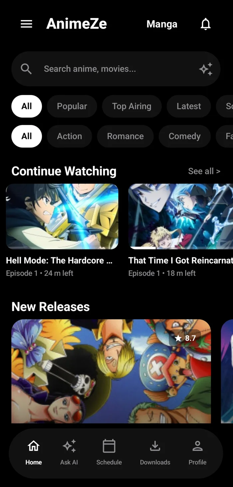
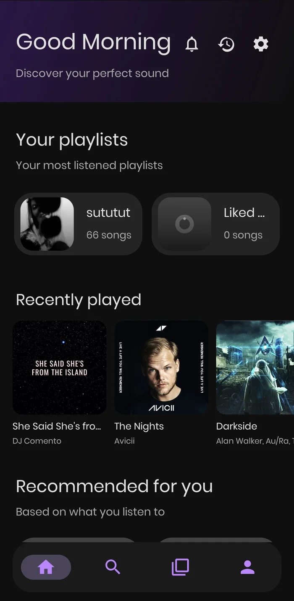

AnimeZe (73★)
Native Android anime streaming and manga reader. Built because official apps were full of ads and trackers. Episode countdown schedules, background offline chapter downloads, and ExoPlayer streaming in one APK.

Native Android anime streaming and manga reader. Built because official apps were full of ads and trackers. Episode countdown schedules, background offline chapter downloads, and ExoPlayer streaming in one APK.
Terminal music visualizer and metadata TUI built with Ink. Real-time CAVA audio frequency spectrum analysis with Linux MPRIS playerctl hooks.

Ad-free Android music player with real-time synchronized LRCLib lyrics, Last.fm recommendations, and multi-tier offline caching.
Porting Lyre's audio engine to Rust for zero overhead. Native fast-Fourier transform (FFT) sampling directly from ALSA and PipeWire ring buffers.